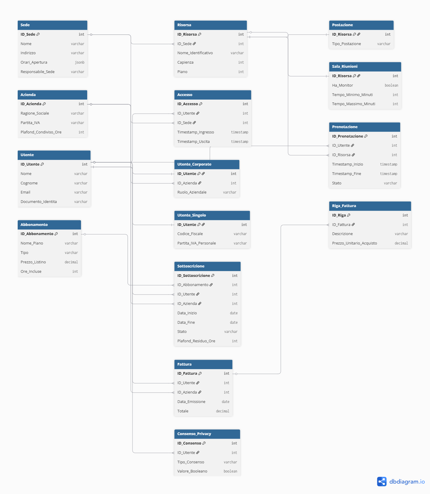

Progettazione concettuale, logica e fisica di un database relazionale enterprise con logica transazionale in PostgreSQL.
Esplora il ProgettoIl dominio applicativo richiede la gestione complessa di spazi condivisi. Abbiamo adottato un approccio orientato alla Terza Forma Normale (3NF) per garantire scalabilità e integrità dei dati.
Riga_Fattura contiene il Prezzo_Unitario_Acquisto scollegato dal listino Abbonamento. Questo vincolo accademico è vitale: l'aggiornamento dei prezzi correnti non deve mai alterare i documenti contabili passati.
Per garantire la robustezza del sistema, la logica non è stata delegata al backend applicativo, ma implementata direttamente a livello di database tramite Trigger, Funzioni e Procedure Transazionali.
Un Trigger BEFORE INSERT/UPDATE impedisce la sovrapposizione temporale di due prenotazioni distinte sulla medesima risorsa fisica, garantendo l'integrità del calendario.
CREATE OR REPLACE FUNCTION check_conflitto_prenotazione()
RETURNS TRIGGER AS $$
BEGIN
IF EXISTS (
SELECT 1 FROM Prenotazione
WHERE ID_Risorsa = NEW.ID_Risorsa
AND Stato IN ('Confermata', 'In_Corso')
AND ID_Prenotazione <> NEW.ID_Prenotazione
AND NEW.Timestamp_Inizio < Timestamp_Fine
AND NEW.Timestamp_Fine > Timestamp_Inizio
) THEN
RAISE EXCEPTION 'Errore: Risorsa già prenotata nell''intervallo richiesto.';
END IF;
RETURN NEW;
END;
$$ LANGUAGE plpgsql;
Lo scalo delle ore da un carnet aziendale richiede sicurezza concorrenziale. Abbiamo utilizzato una Stored Procedure con un lock di riga (FOR UPDATE) per prevenire race conditions e garantire un ROLLBACK in caso di errore.
Abbiamo sviluppato query complesse utilizzando costrutti avanzati come `JOIN` multipli, sub-query correlate e Window Functions per estrarre KPI strategici aziendali.
Identifica gli utenti con abbonamento in scadenza che non hanno effettuato check-in recenti, utilizzando sub-query di esclusione (NOT EXISTS) e algebra delle date.
SELECT
u.Nome, u.Cognome, u.Email, sub.Data_Fine AS Scadenza
FROM Utente u
JOIN Sottoscrizione sub ON u.ID_Utente = sub.ID_Utente
WHERE sub.Stato = 'Attivo'
AND sub.Data_Fine BETWEEN CURRENT_DATE AND (CURRENT_DATE + INTERVAL '30 days')
AND NOT EXISTS (
SELECT 1 FROM Accesso a
WHERE a.ID_Utente = u.ID_Utente
AND a.Timestamp_Ingresso >= (CURRENT_DATE - INTERVAL '15 days')
);
Genera un report finanziario progressivo calcolando la somma mese su mese (Rolling Sum) tramite la clausola OVER (ORDER BY).
SELECT
TO_CHAR(Data_Emissione, 'YYYY-MM') AS Mese,
SUM(Totale) AS Fatturato_Mese,
SUM(SUM(Totale)) OVER (ORDER BY TO_CHAR(Data_Emissione, 'YYYY-MM')) AS Cumulativo
FROM Fattura
WHERE Stato_Pagamento = 'Pagata'
GROUP BY TO_CHAR(Data_Emissione, 'YYYY-MM');
Per simulare un ambiente Enterprise ad alto carico, abbiamo analizzato i piani di esecuzione (Explain Plan) e creato indici specifici, evitando l'over-indexing che avrebbe rallentato le operazioni di INSERT.
ID_Risorsa e ID_Utente per ottimizzare i JOIN ricorsivi.(Timestamp_Inizio, Timestamp_Fine) è stato cruciale per abbattere il costo computazionale del Trigger anticonflitto.
-- Esempio di Indici Strategici
CREATE INDEX idx_prenotazione_risorsa ON Prenotazione(ID_Risorsa);
CREATE INDEX idx_prenotazione_date ON Prenotazione(Timestamp_Inizio, Timestamp_Fine);
CREATE INDEX idx_sottoscrizione_stato ON Sottoscrizione(Stato);